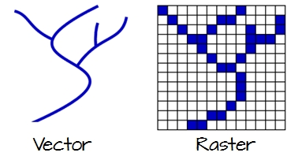

1 Foundations
1.1 Goals and Outcomes
- Understand fundamental spatial data structures and libraries in R.
- Become familiar with coordinate reference systems.
- Perform some fundamental spatial operations in R.
- Geographic I/O
1.2 Background on data structures
Much of this background on data structures is borrowed from Mike Johnson’s Introduction to Spatial Data Science and lecture material from our AWRA 2022 Geo Workshop
Before we dive into spatial libraries, it’s worth a quick review of relevant data structures in R - this will be a whirlwind overview, assuming most everyone is familiar with using R already.
You, computers, and software ‘understand’ values in particular and different ways
-
Computers convert bytes –> hex –> value
- Humans read values
- Software reads Hex bytes
- Hardware reads Binary bytes

What’s the difference between 10 and ‘10’?
- To us: meaning
- To software: how it is handled
- To a computer: nothing
We need human-defined (computer-guessable) data types
Fundamental data types
Storing more than one value requires a structure.
Values can be structured in ways such as:
- vectors
- dimensions/attributes
- data.frames
And data.frames can be operated on with functions such as:
- filter
- select
- mutate
- summarize
- group_by
1.2.1 Vectors
‘vector’ has two meanings when working with GIS data and working in R!
- geographic vector data (which we’ll explore)
-
vectorclass (what we’re talking about here)
geographic vector data is a data model, and the vector class is an R class like data.frame and matrix
Vectors come in two flavors:
- atomic
- list
atomic vectors elements must have the same type
lists elements can have different types
1.2.1.1 Atomic vectors
Coercion
- type is a property of a vector
- When you try to combine different types they’ll be coerced in the following fixed order:
- character => double => integer => logical
- Coercion occurs automatically but generates a warning and a missing value when it fails
c("a", 1)
#> [1] "a" "1"
c("a", TRUE)
#> [1] "a" "TRUE"
c(4.5, 1L)
#> [1] 4.5 1.0
c("1", 18, "GIS")
#> [1] "1" "18" "GIS"
as.numeric(c("1", 18, "GIS"))
#> [1] 1 18 NA
as.logical(c("1", 18, "GIS"))
#> [1] NA NA NASubsetting atomic vectors
1.2.2 Matrix
- A matrix is 2D atomic (row, column)
- Same data types
- Same column length
This is how spatial raster data is structured
Subsetting matrices uses row,column (i,j) syntax
(x = matrix(1:9, nrow = 3))
#> [,1] [,2] [,3]
#> [1,] 1 4 7
#> [2,] 2 5 8
#> [3,] 3 6 9
x[3,]
#> [1] 3 6 9
x[,3]
#> [1] 7 8 9
x[3,3]
#> [1] 91.2.3 Array
- Array is a 3d Atomic (row, column, slice)
This is how spatial raster data with a time dimension is structured
Subsetting arrays uses row, column, slice syntax (i,j,z)
(x = array(1:12, dim = c(2,2,3)))
#> , , 1
#>
#> [,1] [,2]
#> [1,] 1 3
#> [2,] 2 4
#>
#> , , 2
#>
#> [,1] [,2]
#> [1,] 5 7
#> [2,] 6 8
#>
#> , , 3
#>
#> [,1] [,2]
#> [1,] 9 11
#> [2,] 10 12
x[1,,]
#> [,1] [,2] [,3]
#> [1,] 1 5 9
#> [2,] 3 7 11
x[,1,]
#> [,1] [,2] [,3]
#> [1,] 1 5 9
#> [2,] 2 6 10
x[,,1]
#> [,1] [,2]
#> [1,] 1 3
#> [2,] 2 41.2.4 Lists
Eash list element can be any data type
typeof(my_list)
#> [1] "list"Subsetting Lists
- Each element of a list can be accessed with the [[ operator
my_list[[1]]
#> [,1] [,2]
#> [1,] 1 3
#> [2,] 2 4
my_list[[1]][1,2]
#> [1] 31.2.5 Data Frames
-
data.frameis built on theliststructure in R - length of each atomic or list vector has to be the same
- This gives
data.frameobjects rectangular structure so they share properties of both matrices and lists
(df1 <- data.frame(name = c("Me", "Tim", "Sarah"),
age = c(53,15,80),
retired = c(F,F,T)))
#> name age retired
#> 1 Me 53 FALSE
#> 2 Tim 15 FALSE
#> 3 Sarah 80 TRUE
typeof(df1)
#> [1] "list"Subsetting a data.frame
df1[1,2]
#> [1] 53
# or like a list
df1[[2]]
#> [1] 53 15 80
# or with column name operator
df1$name
#> [1] "Me" "Tim" "Sarah"1.2.6 Data manipulation
-
data.framemanipulation is all based on SQL queries - R abstracts the SQL logic and provides function-ized methods
-
dplyrin thetidyverseecosystem provides the ’grammar of data manipulation` approach we’ll use in this workshop
Data manipulation verbs:
- Primary:
-
select(): keeps or removes variables based on names -
filter(): keeps or removes observations based on values _ Manipulation: -
mutate(): adds new variables that are functions of existing variables -
summarise(): reduces multiple values down to a single summary -
arrange(): changes ordering of the rows
-
- Grouping:
-
group_by(): combine with any or all of the above to perform manipulation ‘by group’
-
1.2.7 Pipe operator
- The pipe operator (native R pipe operator
|>ormagrittrpipe operator%>%) provides a more concise and expressive coding experience - The pipe passes the object on the left hand side of the pipe into the first argument of the right hand function
- To be
|>compatible, the data.frame is ALWAYS the fist argument todplyrverbs
A demonstration using dataRetrieval package stream gage data from USGS:
flows <- dataRetrieval::readNWISdv(siteNumbers = '14187200',
parameterCd = "00060") |>
dataRetrieval::renameNWISColumns()
dplyr::glimpse(flows)
#> Rows: 18,327
#> Columns: 5
#> $ agency_cd <chr> "USGS", "USGS", "USGS", "USGS", "USGS", "USGS", "USGS", "…
#> $ site_no <chr> "14187200", "14187200", "14187200", "14187200", "14187200…
#> $ Date <date> 1973-08-01, 1973-08-02, 1973-08-03, 1973-08-04, 1973-08-…
#> $ Flow <dbl> 809, 828, 829, 930, 939, 939, 944, 932, 927, 925, 927, 92…
#> $ Flow_cd <chr> "A", "A", "A", "A", "A", "A", "A", "A", "A", "A", "A", "A…1.2.8 Filter
-
filter()takes logical (binary) expressions and returns the rows in which all conditions are TRUE.
Filter on a single condition:
flows |>
dplyr::filter(Flow > 900) |>
dplyr::glimpse()
#> Rows: 14,436
#> Columns: 5
#> $ agency_cd <chr> "USGS", "USGS", "USGS", "USGS", "USGS", "USGS", "USGS", "…
#> $ site_no <chr> "14187200", "14187200", "14187200", "14187200", "14187200…
#> $ Date <date> 1973-08-04, 1973-08-05, 1973-08-06, 1973-08-07, 1973-08-…
#> $ Flow <dbl> 930, 939, 939, 944, 932, 927, 925, 927, 928, 945, 938, 94…
#> $ Flow_cd <chr> "A", "A", "A", "A", "A", "A", "A", "A", "A", "A", "A", "A…Or multiple conditions:
flows |>
dplyr::filter(Flow > 900, Date > as.Date("2010-01-01")) |>
dplyr::glimpse()
#> Rows: 4,386
#> Columns: 5
#> $ agency_cd <chr> "USGS", "USGS", "USGS", "USGS", "USGS", "USGS", "USGS", "…
#> $ site_no <chr> "14187200", "14187200", "14187200", "14187200", "14187200…
#> $ Date <date> 2010-01-02, 2010-01-03, 2010-01-04, 2010-01-05, 2010-01-…
#> $ Flow <dbl> 7870, 6920, 5860, 7860, 10000, 10100, 9760, 9130, 8600, 7…
#> $ Flow_cd <chr> "A", "A", "A", "A", "A", "A", "A", "A", "A", "A", "A", "A…1.2.9 Select
- Subset variables (columns) you want to keep or exlcude by name
Just keep three columns
Exclude just one
flows |>
dplyr::select(-Flow_cd) |>
dplyr::glimpse()
#> Rows: 18,327
#> Columns: 4
#> $ agency_cd <chr> "USGS", "USGS", "USGS", "USGS", "USGS", "USGS", "USGS", "…
#> $ site_no <chr> "14187200", "14187200", "14187200", "14187200", "14187200…
#> $ Date <date> 1973-08-01, 1973-08-02, 1973-08-03, 1973-08-04, 1973-08-…
#> $ Flow <dbl> 809, 828, 829, 930, 939, 939, 944, 932, 927, 925, 927, 92…..And can rename while selecting
1.2.10 Mutate
-
mutate()defines and inserts new variables into a existingdata.frame -
mutate()builds new variables sequentially so you can reference earlier ones when defining later ones
We can extract Year and Month as new variables from the Date variable using date time
flows |>
dplyr::select(Date, Flow) |>
dplyr::filter(Date > as.Date('2010-01-01')) |>
dplyr::mutate(Year = format(Date, "%Y"),
Month = format(Date, "%m")) |>
dplyr::glimpse()
#> Rows: 5,024
#> Columns: 4
#> $ Date <date> 2010-01-02, 2010-01-03, 2010-01-04, 2010-01-05, 2010-01-06, …
#> $ Flow <dbl> 7870, 6920, 5860, 7860, 10000, 10100, 9760, 9130, 8600, 7040,…
#> $ Year <chr> "2010", "2010", "2010", "2010", "2010", "2010", "2010", "2010…
#> $ Month <chr> "01", "01", "01", "01", "01", "01", "01", "01", "01", "01", "…1.2.11 Summarize and Group_By
-
summarize()allowa you to summarize across all observations -
group_by()allows you to apply any of these manipulation verbs by group in your data
flows |>
dplyr::select(Date, Flow) |>
dplyr::mutate(Year = format(Date, "%Y")) |>
dplyr::group_by(Year) |>
dplyr::summarize(meanQ = mean(Flow),
maxQ = max(Flow))
#> # A tibble: 51 × 3
#> Year meanQ maxQ
#> <chr> <dbl> <dbl>
#> 1 1973 4669. 13200
#> 2 1974 3659. 14400
#> 3 1975 3611. 14100
#> 4 1976 2340. 15000
#> 5 1977 2860. 16200
#> 6 1978 2206. 11300
#> 7 1979 2378. 12000
#> 8 1980 2548. 14700
#> 9 1981 2976. 17000
#> 10 1982 3424. 15100
#> # ℹ 41 more rows1.3 Why R for Spatial Analysis
Advantages
- R is:
- lightweight
- open-source
- cross-platform
- Works with contributed packages - currently 0
- provides extensibility
- Automation and recording of workflow
- provides reproducibility
- Optimized work flow - data manipulation, analysis and visualization all in one place
- provides integration
- R does not alter underlying data - manipulation and visualization in memory
- R is great for repetitive graphics
- R is great for integrating different aspects of analysis - spatial and statistical analysis in one environment
- again, integration
- Leverage statistical power of R (i.e. modeling spatial data, data visualization, statistical exploration)
- Can handle vector and raster data, as well as work with spatial databases and pretty much any data format spatial data comes in
- R’s GIS capabilities growing rapidly right now - new packages added monthly - currently about 275 spatial packages (depending on how you categorize)
Drawbacks for usig R for GIS work
- R is not as good for interactive use as desktop GIS applications like ArcGIS or QGIS (i.e. editing features, panning, zooming, and analysis on selected subsets of features)
- Explicit coordinate system handling by the user
- no on-the-fly projection support
- In memory analysis does not scale well with large GIS vector and tabular data
- Steep learning curve
- Up to you to find packages to do what you need - help not always great
1.4 Spatial Data Structures in R
First we’ll walk through spatial data structures in R and review some key components of data structures in R that inform our use of spatial data in R.
A few core libraries underpin spatial libraries in R (and Python!) and in GIS software applications such as QGIS and ArcPro. Spatial data structures across languages and applications are primarily organized through OSgeo and OGC). These core libraries include:
- GDAL –> For raster and feature abstraction and process
- PROJ –> A library for coordinate transformations and projections
- GEOS –> A Planar geometry engine for operations (measures, relations) such as calculating buffers and centroids on data with a projected CRS
- S2 –> a spherical geometry engine written in C++ developed by Google and adapted in R with the s2 package
We’ll see how these core libraries are called and used in the R packages we explore throughout this workshop.
Vector data are comprised of points, lines, and polygons that represent discrete spatial entities, such as a river, watershed, or stream gauge.
Raster data divides spaces into rectilinear cells (pixels) to represent spatially continuous phenomena, such as elevation or the weather. The cell size (or resolution) defines the fidelity of the data.

1.4.1 Vector Data Model
For Vector data, Simple Features (officially Simple Feature Access) is both an OGC and International Organization for Standardization (ISO) standard that specifies how (mostly) two-dimensional geometries can represent and describe objects in the real world. The Simple Features specification includes:
- a class hierarchy
- a set of operations
- binary and text encodings
It describes how such objects can be stored in and retrieved from databases, and which geometrical operations should be defined for them.
It outlines how the spatial elements of POINTS (XY locations with a specific coordinate reference system) extend to LINES, POLYGONS and GEOMETRYCOLLECTION(s).
The “simple” adjective also refers to the fact that the line or polygon geometries are represented by sequences of points connected with straight lines that do not self-intersect.

1.4.1.1 Points
A point in
sfis composed of one coordinate pair (XY) in a specific coordinate system.A POINT has no length, no area and a dimension of 0.
z and m coordinates As well as having the necessary X and Y coordinates, single point (vertex) simple features can have:
a Z coordinate, denoting altitude, and/or
an M value, denoting some “measure”
# POINT defined as numeric vector
(sf::st_dimension(sf::st_point(c(0,1))))
#> [1] 0
1.4.1.2 Lines
A polyline is composed of an ordered sequence of two or more POINTs
Points in a line are called vertices/nodes and explicitly define the connection between two points.
A LINESTRING has a length, has no area and has a dimension of 1 (length)
# LINESTRING defined by matrix
(sf::st_dimension(sf::st_linestring(matrix(1:4, nrow = 2))))
#> [1] 1
1.4.1.3 Polygon
A POLYGON is composed of 4 or more points whose starting and ending point are the same.
A POLYGON is a surface stored as a list of its exterior and interior rings.
A POLYGON has length, area, and a dimension of 2. (area)
# POLYGON defined by LIST (interior and exterior rings)
(sf::st_dimension(sf::st_polygon(list(matrix(c(1:4, 1,2), nrow = 3, byrow = TRUE)))))
#> [1] 2ggplot() +
geom_polygon(aes(x = c(1,2,3,1), y = c(3,1,2,3)), fill = "green", alpha = .5) +
geom_line(aes(x = c(1,2,3), y = c(3,1,2))) +
geom_point(aes(x = c(1,2,3), y = c(3,1,2)), col = "red") +
labs(x = "X", y = "Y")
WKT (Well-Known Text) and WKB
-Well-known text (WKT) encoding provide a human-readable description of the geometry. - The well-known binary (WKB) encoding is machine-readable, lossless, and faster to work with than text encoding.
WKB is used for all interactions with GDAL and GEOS.
Exampe of WKT
1.4.1.4 Operations on Geometries
This breakdown of simple features follows for the most part this section in Spatial Data Science
** Simple** and valid geometries - Certain conditions have to be met with simple features: + For linestrings to be considered simple they must not self-intersect:

#> is_simple
#> FALSE-
For polygons several other conditions have to be met to be simple:
- polygon rings are closed (the lastpoint equals the first)
- polygon holes (inner rings) are inside their exterior ring
- polygon inner rings maximally touch the exterior ring in single points, not over a line
- a polygon ring does not repeat its own path
- in a multi-polygon, an external ring maximally touches another exterior ring in single points, not over a line
We can break down operations on geometries for vector features in the following way:
-
predicates: a logical asserting a certain property is
TRUE - measures: a quantity (a numeric value, possibly with measurement unit)
- transformations: newly generated geometries
We can look at these operations by what they operate on, whether the are single geometries, pairs, or sets of geometries:
- unary when it’s a single geometry
- binary when it’s pairs of geometries
- n-ary when it’s sets of geometries
Unary predicates work to describe a property of a geometry.
A list of unary predicates:
| predicate | meaning |
|---|---|
is |
Tests if geometry belongs to a particular class |
is_simple |
Tests whether geometry is simple |
is_valid |
Test whether geometry is valid |
is_empty |
Tests if geometry is empty |
A list of binary predicates is:
| predicate | meaning | inverse of |
|---|---|---|
contains |
None of the points of A are outside B | within |
contains_properly |
A contains B and B has no points in common with the boundary of A | |
covers |
No points of B lie in the exterior of A | covered_by |
covered_by |
Inverse of covers
|
|
crosses |
A and B have some but not all interior points in common | |
disjoint |
A and B have no points in common | intersects |
equals |
A and B are topologically equal: node order or number of nodes may differ; identical to A contains B and A within B | |
equals_exact |
A and B are geometrically equal, and have identical node order | |
intersects |
A and B are not disjoint | disjoint |
is_within_distance |
A is closer to B than a given distance | |
within |
None of the points of B are outside A | contains |
touches |
A and B have at least one boundary point in common, but no interior points | |
overlaps |
A and B have some points in common; the dimension of these is identical to that of A and B | |
relate |
Given a mask pattern, return whether A and B adhere to this pattern |
See the Geometries chapter of Spatial Data Science for a full treatment that also covers **unary and binary measures* as well as unary, binary and n-ary transformers